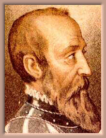

History of Calahorra Castle
The history of Calahorra Castle is closely related to Don Rodrigo Diaz de Vivar y Mendoza,
the first Marquis of Cenete, to whom we owe its construction and who stands as one of
the forerunners of the Italian Renaissance movement in Spain.

Rodrigo Diaz de Vivar y Mendoza was the offspring of an illegitimate union between Grand Cardinal
Pedro González de Mendoza, the "third King of Spain", and Mécia de Lemos,
the companion of Queen Joan of Portugal. Queen Isabelle, despite her highly strict
approach towards the morality of her subjects, forgave her closest adviser's indiscretions
and nicknamed the child "his most beautiful sin".
His first name was chosen in homage to Rodrigo Diaz de Vivar (1043-1099), the famous
Cid Campeador (the "lord who wins battles"), who inspired Corneille
to write his tragi-comedy Le Cid in 1637.
The lively and impulsive Don Rodrigo achieved fame during the war of Granada, serving under
the command of the second Count of Tendilla, particularly during the siege of Baza (1489).
In 1492, he married Leonor de La Cerda, daughter of the Duke of Medinaceli, and settled in
Jadraque; they had a child who died prematurely.
Upon his father's death in 1495, Don Rodrigo inherited Calahorra Castle.
This imposing medieval fortress, isolated in an inhospitable area, was built by Moors
(hence its outward appearance) who had converted to Christianity and was subsequently
offered to the local aristocracy. It is assumed that the castle was used as a prison
during the Spanish Reconquest - gaols can still be seen inside the castle. In 1490,
the Catholic Kings gave the castle to Cardinal Mendoza in reward for his loyal service.
Don Rodrigo's frivolous nature was compounded by his reputation as a womanizer; his wife,
weary of his unfaithfulness and highly affected by the death of their son, died of
exhaustion in 1497.
The merry widower then travelled to Italy. He is alleged to have had a relationship with
Lucrezia Borgia, daughter of Pope Alexander VI, whom he nearly married.
During his stay in Italy, he mingled in the artistic and literary circles in Genoa and Florence.
A man of culture and a humanist at heart, he struck up a friendship with the Italian
"Fedeli d'Amore" (the Faithful to Love), sharing their courtly ideas inherited from the
Knights Templar; the secret society of the Fedeli d'Amore, under the aegis of Dante,
ensured the survival of the Order of the Temple in Italy after its official dissolution in 1312.
He was initiated into the order by Sandro Botticelli himself and later played a part in its development
in the Iberian peninsula.
Shortly after his return to Spain, he fell madly in love with the beautiful
Maria de Fonseca and wanted her hand in marriage. Unfortunately, for shady reasons of inheritance
and with the authorisation of the Spanish monarchy, Don Alfonso de Fonseca was planning to
(forcefully) marry his daughter to one of his cousins and therefore forbade their union. Regardless,
Don Rodrigo secretly married Maria with consent from her mother. Queen Isabelle,
furious at this blatant act of disobedience, annulled the marriage and imprisoned Don Rodrigo
in Cabezón Castle.
Upon Isabelle's death in 1504, he was released by Felipe el Hermoso, the new King of Spain.
Still madly in love with Maria de Fonseca, he managed to organise her abduction from the convent
where she had been leading a cloistered life since their separation. In 1506, they remarried
in Jadraque, though officially this time, and then retired to Calahorra Castle.
Mencía, their first daughter, was born in 1508, followed two years later by Maria, their second daughter.
Between 1509 and 1512,
Don Rodrigo had the magnificent Renaissance palace built inside the castle for the comfort of his
wife and children. Based on a project designed by Lorenzo de Vazquez, the architect of the Mendoza House,
its decoration was entrusted to Michele Carlone of Rovio, and to the sculptors Egidio, Pietro and Giovanni
of Verda, Gandria - the staircase leading to the upper gallery is made out of Carrara marble,
imported directly from Italy.
Don Rodrigo was later appointed governor of Valencia, where he lived until his death
on 22 February 1523. His body lies in the Convento de Santo Domingo in Valencia.
The cultured, refined upbringing of Don Rodrigo Diaz de Vivar y Mendoza can be seen by his library, which
included no less than 631 manuscripts in 1523, which was quite exceptional at the time.
Inspired by two different worlds, he enjoyed the rustic simplicity of the Middles Ages just as much as he
appreciated the finery of the Renaissance. His castle in La Calahorra reflects
his dual personality, with its medieval, male exterior and its sensitive, feminine interior.